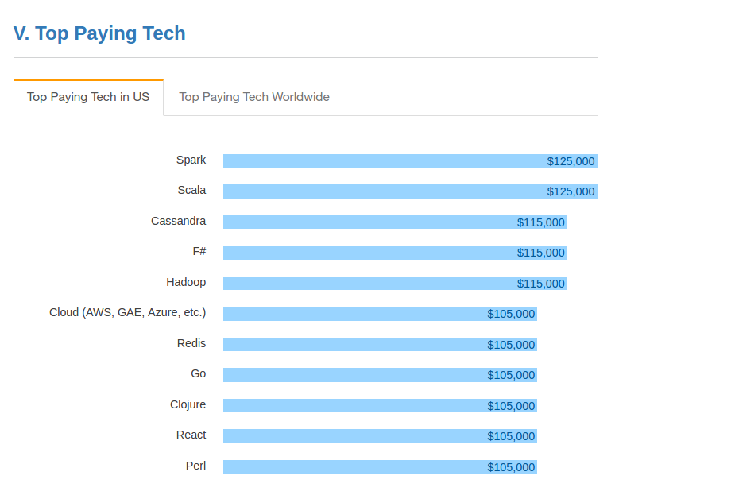
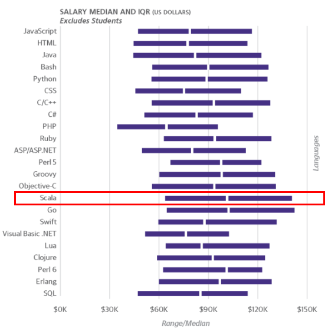
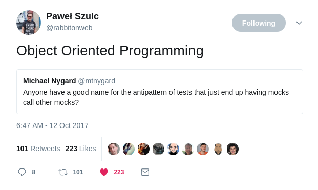
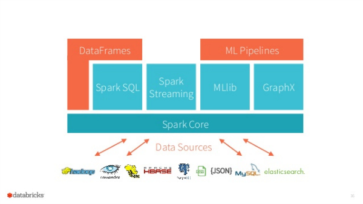

<!doctype html>
<html lang="en">

<head>
	<meta charset="utf-8">

	<title>Scala. Yes, but why? </title>
	<meta name="description" content="Short introduction to Scala and its ecosystem.">
	<meta name="author" content="Krzysztof Romanowski">

	<meta name="apple-mobile-web-app-capable" content="yes"/>
	<meta name="apple-mobile-web-app-status-bar-style" content="black-translucent"/>

	<meta name="viewport"
	      content="width=device-width, initial-scale=1.0, maximum-scale=1.0, user-scalable=no, minimal-ui">
	<link href="https://fonts.googleapis.com/css?family=Frijole" rel="stylesheet">
	<link href="https://fonts.googleapis.com/css?family=Share+Tech+Mono" rel="stylesheet">

	<link rel="stylesheet" href="css/reveal.css">
	<link rel="stylesheet" href="css/theme/black.css" id="theme">
	<link rel="icon" href="imgs/favicon-32.png" type="image/png">

	<!-- Code syntax highlighting -->
	<link rel="stylesheet" href="lib/css/zenburn.css">

	<style type="text/css">
		.lefty {
		text-align: left;
		font-size: 65% !important;
		margin-left: 5%  !important;
		}

		.marked {
			color: #bf3c3c !important;
		}
		.marked2 {
			color: #42affa !important;
		}

		.bigger {
				font-size: 130% !important;
		}

		.small {
				font-size: 40% !important;
		}

		img {
			background: none;
			border: none;
			box-shadow: none"
		}

		.monads {
			z-index: -5;
			position: fixed;
			top: -10%;
			left: -10%;
			width: 200px;
		}

		.right {
			text-align: right;
			margin-right: -40px !important;
		}
		.left {
			text-align: left;
			margin-left: -40px !important;			
		}

		html, body, #tv {
	padding: 0;
	margin: 0;
	width: 100%;
	height: 100%;
}

#tv {
	position: absolute;
	top: 0;
	left: 0;
	-webkit-transform: translate3d(0, 0, 0);
	-moz-transform: translate3d(0, 0, 0);
	transform: translate3d(0, 0, 0);
	-webkit-backface-visibility: hidden;
	-webkit-perspective: 1000;
}
	</style>

	<!-- Printing and PDF exports -->
	<script>
			var link = document.createElement( 'link' );
			link.rel = 'stylesheet';
			link.type = 'text/css';
			link.href = window.location.search.match( /print-pdf/gi ) ? 'css/print/pdf.css' : 'css/print/paper.css';
			document.getElementsByTagName( 'head' )[0].appendChild( link );


	</script>

	<!--[if lt IE 9]>
	<script src="lib/js/html5shiv.js"></script>
	<![endif]-->
</head>

<body>


<!--<canvas id="tv"></canvas>-->

<div class="reveal">

	<!-- Any section element inside of this container is displayed as a slide -->
	<div class="slides">

		<section data-markdown>
			<script type="text/template">
				### Krzysztof Romanowski

				romanowski.kr@gmail.com

				<div style="margin-left: 36% text-align: left;">
					 romanowski
					<br/>
					 `RomanowskiKr`

				</div>
				
			</script>
		</section>


		<section data-markdown>
			<script type="text/template">
				### Who am I?

				* 6 years in <span class="marked">Scala</span>
				* Tooling for scala huge <span class="marked2">monorepo</span>:
					* over <span class="marked">2 MLOC</span>
					* over 200 devs, <span class="marked">30 PRs/day</span>
					* compilation over <span class="marked2">40 mins<span class="marked">
				* <span class="marked">github</span>.com/romanowski/<span class="marked">hoarder</span>
			</script>
		</section>


		<section data-markdown data-background-image="imgs/vl-tech.png" data-background-size=cover>
			<script type="text/template" >
				

			</script>
		</section>

		<section data-markdown>
			<script type="text/template">
				Slides:

				<a href="http://romanowski.github.io/jug-kielce" class="marked">romanowski.github.io/jug-kielce</a>
			</script>
		</section>

		<section data-markdown>
			<script type="text/template">
				# <span class="marked">Scala!</span>
				## Yes, but <span class="marked">why?</span>
			</script>
		</section>

		<section data-markdown>
			<script type="text/template">
				
				<span class="small">http://stackoverflow.com/research/developer-survey-2016</span>
			</script>
		</section>

		<section data-markdown>
			<script type="text/template">
				
				<br>				
				<span class="small">https://www.oreilly.com/ideas/2017-software-development-salary-survey</span>
			</script>
		</section>

		<section data-markdown>
			<script type="text/template">
			>	`If I were to pick a` <span class="marked">language</span> `today other than` Java, `it would be` <span class="marked">Scala</span>.

			James Gosling, `father of` <span class="marked">Java</span>


			</script>
		</section>

		<section data-markdown>
			<script type="text/template">
				> `I can honestly say if someone had shown me the` <span class="marked">Programming Scala book</span> `by` Martin Odersky, Lex Spoon & Bill Venners `back in 2003 I'd probably have` never created <span class="marked">Groovy</span>.

				James Strachan, `creator of` <span class="marked">Groovy</span>

			</script>
		</section>

		<section data-markdown>
			<script type="text/template">
				## Disclaimer

				I do not and shall not <span class="marked2">discriminate</span> any feature, style of programming, naming convection, <span class="marked">formatting</span> or lack thereof.

				<span class="marked">Scala</span> and its <span class="marked">ecosystem</span> provides equal <span class="marked2">opportunities</span> without regard of used indentation form, operating system, editor or IDEs.

				Regardless of crap above, please format <span class="marked2">your code</span>.
			</script>
		</section>

		<section data-markdown>
			<script type="text/template">
			Try it: <a href="https://scastie.scala-lang.org" class="marked">scastie.scala-lang.org</a>
			</script>
		</section>

		<section data-markdown>
			<script type="text/template">
			<span class="marked">Scala</span>
			```scala
			val uris = new File("resources").listFiles.map(_.toURI)
			```

			Before <span class="marked2">Java 8</span>
			```java
			List<URI> urlsList = new ArrayList<>();
			for (File resource : new File("resources").listFiles()) {
				urlsList.add(resource.toURI());
			}
			URI[] uris = urlsList.toArray(new URI[urlsList.size()]);
			```
			</script>
		</section>


	<section data-markdown>
			<script type="text/template">
				```scala
				trait CallableExecutor extends Executor {
					def execute(task: Callable[_]): Unit = execute(() => task.call())
				}
				
				val executor = new ForkJoinPool() with CallableExecutor
				val threadPool = new ScheduledThreadPoolExecutor(4) with LoggingExecutor				
				```
			
				
				```java
				public interface CallableExecutor extends Executor {
					public void execute(Callable<?> operation);
				}
				class LoggingFJP extends ForkJoinPool implements CallableExecutor {
					@Override
					public void execute(Callable<?> operation) {
						execute(new Runnable() {
							@Override
							public void run() { operation.call(); } // Exceptions?
						});
					}
				}
				LoggingExecutor forkJoin = new LoggingFJP();
				// And the same for ScheduledThreadPoolExecutor... 				
				```
			</script>
		</section>

		<section data-markdown>
			<script type="text/template">
				<span class="marked">Scala</span> vs. <span class="marked2">Java 8</span>
			</script>
		</section>

		<section data-markdown>
			<script type="text/template">
				<span class="marked">Scala</span>
				```scala
				val uris = new File("resources").listFiles.map(_.toURI)
				```
				
				<span class="marked2">Java 8</span>
				```java
				URI[] uris = Arrays.stream(new File("resources").listFiles())
					.map(f -> f.toURI()).toArray(URI[]::new);
				```
			</script>
		</section>

		<section data-markdown>
			<script type="text/template">
				```scala
				trait CallableExecutor extends Executor {
					def execute(task: Callable[_]): Unit = 
						execute(execute(() => task.call()))
				}
				
				val executor = new ForkJoinPool() with CallableExecutor
				```
			
				
				```java
				interface CallableExecutor extends Executor {
					default void execute(Callable<?> operation) {
						execute(operation::call);
					}
				}
				
				class CallableFJP extends ForkJoinPool implements CallableExecutor {}
				LoggingExecutor executor = new CallableFJP();			
				```
			</script>
		</section>
		
		<section data-markdown>
			<script type="text/template">
				Wait, <span class="marked2">Java 8</span> is as good as <span class="marked">Scala</span>? 
			</script>
		</section>

		<section data-markdown>
			<script type="text/template">
				```scala
				trait CallableExecutor extends Executor {
					def execute(task: Callable[_]): Unit = 
						execute(execute(() => task.call()))
				}
				
				val executor = new ForkJoinPool() with CallableExecutor
				val threadPool = new ScheduledThreadPoolExecutor(4) with CallableExecutor
				```
				
				```java
				interface CallableExecutor extends Executor {
					default void execute(Callable<?> operation) {
						execute(operation::call);
					}
				}
				
				class CallableFJP extends ForkJoinPool implements CallableExecutor {}
				
				class CallableSTPE extends 
					ScheduledThreadPoolExecutor implements CallableExecutor {
						public CallableSTPE() { super(4); }
				}

				LoggingExecutor executor = new CallableFJP();
				CallableExecutor threadPool = new CallableSTPE();
				```
			</script>
		</section>

		<section data-markdown>
			<script type="text/template">
				<span class="marked bigger">Scala</span> `is` <br> 
				<span class="marked">functional</span> `and` <span class="marked2">object oriented</span> <br> 
				`general purpose language with` <br>
				strong static and <span class="marked">inferred</span> <br> 
				`type system that is ` Turing Complete

				<span class="marked2 bigger">Java</span> `is` <br> 
				<span class="marked2">object oriented</span> <br> 
				`general purpose language with` <br>
				strong static and <span class="marked2">manifest</span><br>
				`type system`
			</script>
		</section>

		<section data-markdown>
			<script type="text/template">
			* Functional Programming
			* Type system
			* General look and feel
			* Ecosystem

			<br>	
			</script>
		</section>

		<section>
			<section data-markdown>
				<script type="text/template">
					## <span class="marked2">Functional Programming!</span>
					## Yes, but <span class="marked">why?</span>
				</script>
			</section>

			<section data-markdown>
				<script type="text/template">
					
				</script>
			</section>


			<section data-markdown>
				<script type="text/template">
					<span class="marked2">Functional Programming?</span>

					* Functions `are fist-class citizens` 
					* `Avoid state / side effects` (Immutability)
					
				</script>
			</section>

			<section data-markdown>
				<script type="text/template">
					<span class="marked bigger">Monads</span> ???

					
				</script>
			</section>

			<section data-markdown>
				<script type="text/template">
					## Functions
					<span class=fragment> <span class="marked">S.O.L.I.D</span> `meets` <span class="marked2">F.P.</span></span>
				</script>
			</section>

			<section data-markdown>
				<script type="text/template">
					With Functions

					Free | <span class="marked bigger">S</span>`ingle responsibility principle` 
					--- | ---
					Free | <span class="marked bigger">O</span>`pen/closed principle`  
					Free | <span class="marked bigger">L</span>`iskov substitution principle`
					Free | <span class="marked bigger">I</span>`nterface segregation principle` 
					Easier | <span class="marked bigger">D</span>`ependency inversion principle`
				</script>
			</section>

			<section data-markdown>
				<script type="text/template">
					<span class="marked bigger">Scala Function</span> <span class="bigger"> = </span> <span class="marked2">Java Lambda</span>

					

					<div class=fragment>

					* curring
					* checked exceptions 
					* better/shorter syntax
					* Interfaces in API are functional
				
					<div>
				</script>
			</section>

			<section data-markdown>
				<script type="text/template">
					<span class="marked">Immutable</span> objects?
	
					* easier to construct, test and use
					* thread-<span class="marked2">safe</span>
					* helps with temporal coupling
					* no need for defensive coping
					* <span class="marked2">easier</span> caching	

					<a class="small" href="yegor256.com/2014/06/09/objects-should-be-immutable.html">yegor256.com/2014/06/09/objects-should-be-immutable.html</a>
				</script>
			</section>

			<section data-markdown>
				<script type="text/template">
					<span class="marked2">Immutable</span> object FAQ
	
					<div class=left>`Are immutable objects harder to write/read?`</div>
					<div class=right>`Maybe in Java. In Scala it is default.`</div>
					<br> 
					<div class=left>`Is coping instead of changing is expensive?`</div>
					<div class=right>`Creating objects is cheap in modern JVM.` <br>`Immutable data structures usually shares data.`</div>
					<br> 
			
					<div class=left>`Can I use it on enterprise applications?`</div>
					<div class=right>`E.g. Erlang is fully immutable.`</div>
				</script>
			</section>

			<section data-markdown>
				<script type="text/template">
					## <span class="marked">case class</span>


					```scala
					case class Point(a: Int, b: Int)

					// equals and hashCode, factory method...
					new Point(1,2) == Point(1,2) // true

					// ... copy method and fancy toString are generated for you
					println(Point(1,2).copy(b = 3)) // prints 'Point(1, 3)'

					```
				</script>
			</section>

			<section data-markdown>
				<script type="text/template">
					<span class="marked2">Immutability</span> `in` <span class="marked">Scala</span>

					* `val` over `var (sbt codebase`: 7694 `/` 127 `)`
					* `collection are` <span class="marked">immutable</span> `by default`
					* `no side effects in` APIs
					
					<br>

					<span class="marked">Scala</span> is immutable by <span class="marked2">default.</span><br>`\in most cases\`
				</script>
			</section>

			<section data-markdown>
				<script type="text/template">
				Use <span class="marked bigger">Monads</span> to 

				avoid Side effects / global mutable state.
				</script>
			</section>

			<section data-markdown>
				<script type="text/template">
				<span class="marked bigger">Monads ???</span> Scalaz/Cats
	
				
				</script>
			</section>

			<section data-markdown>
				<script type="text/template">
				With <span class="marked">FP</span> you can start small.

				FP pays off on <span class="marked2">use site</span>.
				</script>
			</section>


		</section>

		<section>
			<section data-markdown>
				<script type="text/template">
				## Type system
				</script>
			</section>

			<section data-markdown>
				<script type="text/template">
				Is <span class="marked2">Java</span> static typed?

				```java
				File[] files = new File(".").listFiles();
				List<URI> uriList = new ArrayList<>();
				for (File resource : files) {
					urlsList.add(resource.toURI());
				}
				Stream<URI> uris = Arrays.stream(files).map(File::toURI);


				// Below compiles and throws exception at runtime
				uriList.toArray(new URL[urlsList.size()]);
				uris.toArray(URL[]::new);
				```
				</script>
			</section>

			<section data-markdown>
				<script type="text/template">
				<span class="marked">Scala</span> is truly stating typed

				```java
				Seq(1, 2, 3).sum // compiles fine
				Seq("a", "b", "c").sum // compilation error

				Seq("a" -> 6, "b" -> 5).toMap // compiles fine
				Seq("a", "b").toMap // compilation error

				Vector("Foo", "Bar", "Baz").map(_.drop(1)) // returns Vector
				Set("Foo", "Bar", "Baz").map(_.drop(1)) // returns Set
				```
				</script>
			</section>

			<section data-markdown>
				<script type="text/template">
					Types: <span class="marked">Definitions</span>
	
					```scala
					type IntMatrix = Array[Array[Int]]
					type Matrix[Type] = Array[Array[Type]]
					type NumericMatrix[Type <: Numeric[Type]] = Array[Array[Type]]
	
					def twice[A](matrix: NumericMatrix[A]): NumericMatrix[A] =
					 for {
						row <- matrix
						elem <- row
					} yield row * 2
	
					```
	
					
	
				</script>
			</section>
	
			<section data-markdown>
				<script type="text/template">
					Types:  <span class="marked">Variance</span>
	
					```scala
					class Animal
					class Dog extends Animal
					
					class Food[+For]
					def test(food: Food[Animal]) = ???
					
					test(new Food[Dog]) //try to implement this is Java
					
					class Function[-Param, +Return]
					def stringify(function: Function[Animal, CharSequence]) = ???
					
					stringify(new Function[Any, String])
					stringify(new Function[Animal, CharSequence])
					
					stringify(new Function[Dog, CharSequence]) // won't compile
					stringify(new Function[Animal, Any]) // won't compile
					```
					
				</script>
			</section>
	
			<section data-markdown>
				<script type="text/template">
					<span class="marked2">Typeclasses</span>
					```scala
					trait Printer[A]{ def pretty(a: A): String }
					implicit object StringPrinter extends Printer[String] { ... }
					implicit object IntPrinter extends Printer[String] { ... }
					
					
					def prettyLong[A](a: A, printer: Printer[A]) = printer.pretty(a)
					prettyLong(1, IntPrinter) // Java style, boring...
					
					def prettyNice[A: Printer](a: A) = implicitly[Printer[A]].pretty(a)
					prettyNice("Ala") // Now you talking...
	
					
					prettyNice(Array(1, 2)) // Let's support arrays!
					prettyNice(Array(false)) // But this should not compile...
					```
					
				</script>
			</section>

			<section data-markdown>
				<script type="text/template">
					<span class="marked">Implicits</span> and  <span class="marked2">Typeclasses</span>
					```scala
					implicit def arrayPretty[A: Printer] = new Printer[Array[A]] {
						override def pretty(a: Array[A]): String = 
							a.map(e => prettyNice(e)).mkString("{", ", ", "}")
					}
				
					prettyNice(Array("a", "n"))
					prettyNice(Array(false)) // This does not compile...
					```

					`somewhere in client code...`

					```scala
					case class User(name: String, age: Int)
					implicit object UserPrinter extends Printer[User]{
						override def pretty(a: User): String = s"${a.name}, ${a.age} years old"
					}
					
					prettyNice(Array(User("Krzys", 18))) // Yey! I can support any type I want
					```
	
					
				</script>
			</section>
		</section>

		<section>
			<section data-markdown>
				<script type="text/template">
					General look and feel
				</script>
			</section>

			<section data-markdown>
				<script type="text/template">
				Scala is <span class="marked bigger">designed</span>
	
				fewer <span class="marked2">special</span> cases,
				more <span class="marked2">generic</span> mechanisms
	
				</script>
			</section>

			<section data-markdown>
				<script type="text/template">
					Syntax tricks & <span class="marked">naming</span>

					```scala
					Seq(1, 1).foreach(println) // or
					Seq(1, 1) foreach println

					case class Vector(params: Int*) {
						// operator is just a method named `*`
						def *(a: Int) = Vector((params map (_ * a)):_*)
						def `And we can be even crazier!` = "madness"
					}

					Vector(1, 2, 3) * 3
					Vector(1).`And we can be even crazier!`
					```

				</script>
			</section>


			<section data-markdown>
				<script type="text/template">
					Syntax tricks: everything <span class="marked bigger">returns</span>&nbsp;a&nbsp;value

					```scala
					// for ... yield loop and if return value
					def abs(a: Int) = if(a < 0) -a else a
					val sqrts = for(i <- Seq(1, 2, 3)) yield i * i
					```

					```scala
					// blocks return value and can define val/vars/def
					val a = {
						val b = 3
						def sqrt(v: Int) = v * v
						sqrt(b)
					}

					// you can ommit `{}` for single expression
					if (isFriday()) grabBeer() else {
						doALotOfWork()
						grabCoffee()
					}
					```
				</script>
			</section>

			<section data-markdown>
				<script type="text/template">
					Sidenote<span/>: <span class="marked bigger">DSLs</span>

					<a class="marked2" href="https://github.com/fogus/baysick">BAYSICK</a> - subset of BASIC implemented as Scala <span class="marked">DSL</span>

					```
					// This compiles and run!
					object SquareRoot extends Baysick with App {
						10 PRINT "Enter a number"
						20 INPUT 'n
						30 PRINT "Square root of " % "'n is " % SQRT('n)
						40 END

						RUN
					}
					```
					
				</script>
			</section>

			<section data-markdown>
				<script type="text/template">
					Syntax tricks: <span class="marked">imports</span>&nbsp;everywhere

					```scala
					val immutable = Set(1, 2, 3) // good default in Scala

					if (unsafeOperation){
						import collection.mutable.Set
						val mutable = Set(1, 2, 3)
					}

					val immutableAgain = Set(1, 2, 3) // good default in Scala

					```
				</script>
			</section>

			<section data-markdown>
				<script type="text/template">
					Nesting

					```scala
					object A {
					val b = {
						def c()={
						object D {
							trait E {
							val F = {
								def G() = {
								class H {}
									"too deep!"
							}}}
							D
						}}
					c()
					}}
					```

					
				</script>
			</section>

			<section data-markdown>
				<script type="text/template">
					## String <span class="marked">interpolation</span>

					```scala
					val localVal = "localVal"

					s"I will be filled with $localVal or even block ${
						"Any scala code can goes here!"
					}"
					```

					Not a <span class="marked2">special</span> case

					```
					implicit class JsonInterpolator(val sc: StringContext) {
						def json(args: Any*): Json  = ???
					}
					val json = json"""{"a": $localVal}""" // will return json

					```

					
				</script>
			</section>

			<section data-markdown>
				<script type="text/template">
					Objects

					```scala
					trait Output { def println(msg: String) = ??? }
					object StdOutput extends Output

					val msg = "We can use inheritance to create static methods!"
					StdOutput.println(msg)

					```
				</script>
			</section>

			<section data-markdown>
				<script type="text/template">
					### pattern <span class="marked">match</span>ing


					```scala
					case class Point(a: Int, b: Int)

					def myFavouritePoints(p: Point) = p match {
						case point if isInteresting(point) =>
							true // We can create guards
						case Point(0, _) =>
							true // We can match specific values
						case Point(x, 0) if x > 0 =>
							true // we can extract specific value
						case other @ Point(x, y) if iWantToPrint(x, y) =>
							true // We can always mix it all together
						case _ =>
							false // Default case
					}
					```
				</script>
			</section>

			<section data-markdown>
				<script type="text/template">
					### Pattern <span class="marked">match</span>ing
					Not&nbsp;a&nbsp;<span class="marked2">special</span>&nbsp;case!

					```
					object OnYAxis {
						def unapply(p: Point): Option[Int] =
							if(p.y == 0) Some(p.x) else None
					}
					def doSomething(p: Point) = p match {
						case OnYAxis(x) => x
					}

					// or even
					val OnYAxis(x) = Point(4, 0)

					```

					
				</script>
			</section>

			<section data-markdown>
				<script type="text/template">
					Live example.

					How can I return <span class="marked2">2 values</span> from a <span class="marked">function</span>?

					```scala
					val (a, b) = { // This is syntactic sugar for `Tuple2(a, b)`
						val a = costlyOperation()
						val b = costlyOperationOnA(a)
						(a, b) // This is syntactic sugar for `Tuple2(a, b)`
					}
					```
				</script>
			</section>
		</section>

		<section data-markdown>
			<script type="text/template">
				#### Advanced (and <span class=marked>scary</span>) Scala

				* <span class=marked>Type</span> level programming
				* hardcode <span class=marked>FP</span> (Category Theory)
				* Macros and <span class=marked>meta</span> programming

				
				
				
			</script>
		</section>

		<section data-markdown>
			<script type="text/template">
				Scala runs on:

				<span class="marked">JVM</span>, <span class="marked2">Javascript</span> and native (<span class="marked">llvm</span>).
			</script>
		</section>

		<section data-markdown>
			<script type="text/template">
				### Scala. <span class="marked">Complains.</span>

				- Lack of <span class="marked2">tooling</span> (not anymore?)
				- <span class="marked2">Compiler</span> speed
				- Easy to write rubbish code
				- Hard to understand scala code
				- Too many <span class="marked">implicit</span>s
				- <span class="marked">Binary</span> compatibility
				- <del><span class="marked">Monads</span></del>

				
			</script>
		</section>

		<section>

			<section data-markdown>
				<script type="text/template" class="smaller-list">
					##Ecosystem
				</script>
			</section>

			<section data-markdown>
				<script type="text/template" class="smaller-list">
					## IDEs:

					<span class="marked">Intellij</span> / Eclipse <span class="small">(ScalaIDE)</span> /
					<span class="marked2">Ensime</span>&nbsp;<span class="small">(Emacs&nbsp;VSCode,&nbsp;VIM,&nbsp;sublime)</span>

					<br>

					## Build tools:

					<span class="marked">SBT</span> / Gradle / <span class="marked2">Pants</span> / Maven
				</script>
			</section>

			<section data-markdown>
				<script type="text/template">
					## Main Frame<span class="marked">work</span>s
					and other fascinating libs

					* <span class="marked">Spark</span> - <del>Big</del><span class="marked2">Fast</span> Data
					* <span class="marked">Akka</span> - super fast concurrency
					* Web: <span class="marked">Play</span>, Spray, Finatra
					* Cats/scalaz (<span class="marked2">monad</span>s alert!)
				</script>
			</section>

			<section data-markdown>
				<script type="text/template">
					

					
				</script>
			</section>


			<section data-markdown>
				<script type="text/template">
					
				</script>
			</section>

			<section data-markdown>
				<script type="text/template">
					<span class=marked>Actor</span>s:

					* sent and <span class=marked>react</span>s on messages
					* create new actors
					* let`it`crash`.com`
					* only one message processed at time
				</script>
			</section>

			<section data-markdown>
				<script type="text/template">
					<span class=marked>React</span>ive streams, jdk9 and <span class=marked>akka</span> streams
				</script>
			</section>

			<section data-markdown>
				<script type="text/template">
					## <span class="marked">Play</span>

					full stack, web framework

					* Java/Scala apis
					* <span class="marked">stateless</span>, non-<span class="marked2">block</span>ing
					* Integration with less, coffeescript, Akka
					* Modern: JSON, websocets, evensource, commet
					* No<span class="marked">SQL</span> and Big Data support
				</script>
			</section>

			<section data-markdown>
				<script type="text/template">
					* Shapeless (type&nbsp;level&nbsp;programming)
					* Monix (asycnhronus&nbsp;event&nbsp;programming)
					* http4s (http)
					* spire (math)
					* splick/doobie (sql)
				</script>
			</section>
		</section>	

		<section data-markdown>
			<script type="text/template">
				### Krzysztof Romanowski

				romanowski.kr@gmail.com

				<div style="margin-left: 36% text-align: left;">
					 romanowski
					<br/>
					 `RomanowskiKr`

				</div>

				
			</script>
		</section>

		<!-- ################################################################################################################ -->
	</div>

</div>

<script src="lib/js/head.min.js"></script>
<script src="js/reveal.js"></script>

<script>

			// The full list of configuration options available at:
			// https://github.com/hakimel/reveal.js#configuration
			Reveal.initialize({
				controls: true,
				progress: true,
				history: true,
				center: true,

				transition: 'slide', // none/fade/slide/convex/concave/zoom

				// Optional reveal.js plugins
				dependencies: [
					{ src: 'lib/js/classList.js', condition: function() { return !document.body.classList; } },
					{ src: 'plugin/markdown/marked.js', condition: function() { return !!document.querySelector( '[data-markdown]' ); } },
					{ src: 'plugin/markdown/markdown.js', condition: function() { return !!document.querySelector( '[data-markdown]' ); } },
					{ src: 'plugin/highlight/highlight.js', async: true, callback: function() { hljs.initHighlightingOnLoad(); } },
					{ src: 'plugin/zoom-js/zoom.js', async: true },
					{ src: 'plugin/notes/notes.js', async: true }
				]
			});

		(function() {
	"use strict";

	var canvas = document.querySelector("#tv"),
		context = canvas.getContext("2d"),
		scaleFactor = 2.5, // Noise size
		samples = [],
		sampleIndex = 0,
		scanOffsetY = 0,
		scanSize = 0,
		FPS = 60,
		scanSpeed = FPS * 15, // 15 seconds from top to bottom
		SAMPLE_COUNT = 10;

	window.onresize = function() {
		canvas.width = canvas.offsetWidth / scaleFactor;
		canvas.height = canvas.width / (canvas.offsetWidth / canvas.offsetHeight);
		scanSize = (canvas.offsetHeight / scaleFactor) / 3;

		samples = []
		for(var i = 0; i < SAMPLE_COUNT; i++)
			samples.push(generateRandomSample(context, canvas.width, canvas.height));
	};

	function interpolate(x, x0, y0, x1, y1) {
		return y0 + (y1 - y0)*((x - x0)/(x1 - x0));
	}


	function generateRandomSample(context, w, h) {
		var intensity = [];
		var random = 0;
		var factor = h / 50;

		var intensityCurve = [];
		for(var i = 0; i < Math.floor(h / factor) + factor; i++)
			intensityCurve.push(Math.floor(Math.random() * 15));

		for(var i = 0; i < h; i++) {
			var value = interpolate((i/factor), Math.floor(i / factor), intensityCurve[Math.floor(i / factor)], Math.floor(i / factor) + 1, intensityCurve[Math.floor(i / factor) + 1]);
			intensity.push(value);
		}

		var imageData = context.createImageData(w, h);
		for(var i = 0; i < (w * h); i++) {
			var k = i * 4;
			var color = Math.floor(36 * Math.random());
			// Optional: add an intensity curve to try to simulate scan lines
			color += intensity[Math.floor(i / w)];
			imageData.data[k] = imageData.data[k + 1] = imageData.data[k + 2] = color;
			imageData.data[k + 3] = 255;
		}
		return imageData;
	}

	function render() {
		context.putImageData(samples[Math.floor(sampleIndex)], 0, 0);

		sampleIndex += 30 / FPS; // 1/FPS == 1 second
		if(sampleIndex >= samples.length) sampleIndex = 0;

		var grd = context.createLinearGradient(0, scanOffsetY, 0, scanSize + scanOffsetY);

		grd.addColorStop(0, 'rgba(255,255,255,0)');
		grd.addColorStop(0.1, 'rgba(255,255,255,0)');
		grd.addColorStop(0.2, 'rgba(255,255,255,0.2)');
		grd.addColorStop(0.3, 'rgba(255,255,255,0.0)');
		grd.addColorStop(0.45, 'rgba(255,255,255,0.1)');
		//grd.addColorStop(0.5, 'rgba(255,255,255,1.0)');
		//grd.addColorStop(0.55, 'rgba(255,255,255,0.55)');
		//grd.addColorStop(0.6, 'rgba(255,255,255,0.25)');
		//grd.addColorStop(0.8, 'rgba(255,255,255,0.15)');
		grd.addColorStop(1, 'rgba(255,255,255,0)');

		context.fillStyle = grd;
		context.fillRect(0, scanOffsetY, canvas.width, scanSize + scanOffsetY);
		context.globalCompositeOperation = "lighter";

		//scanOffsetY += (canvas.height / scanSpeed);
		if(scanOffsetY > canvas.height) scanOffsetY = -(scanSize / 2);

		window.setTimeout(function() {
			window.requestAnimationFrame(render);
		}, 1000 / FPS);
	}
	window.onresize();
	window.requestAnimationFrame(render);
})();


</script>

</body>
</html>
